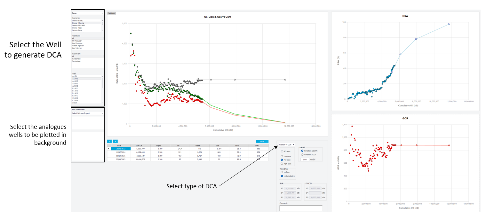
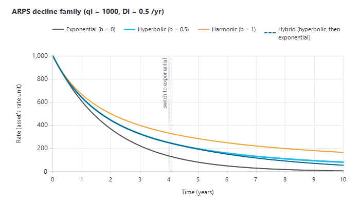
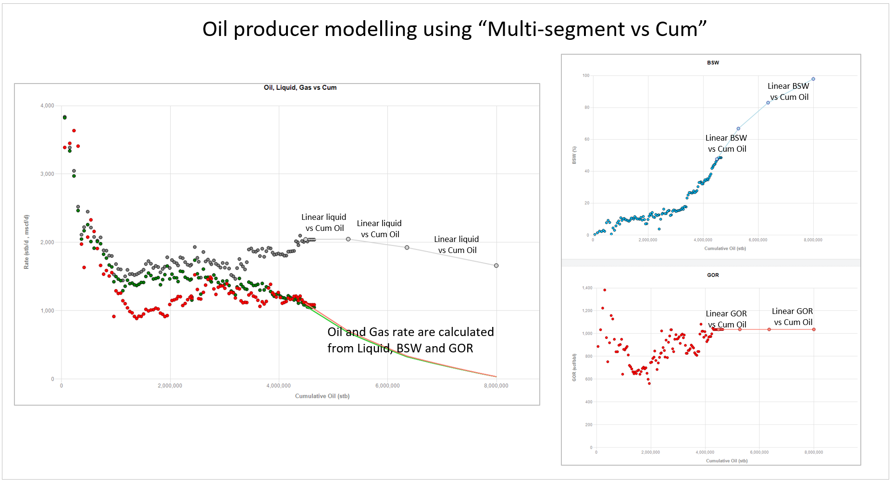
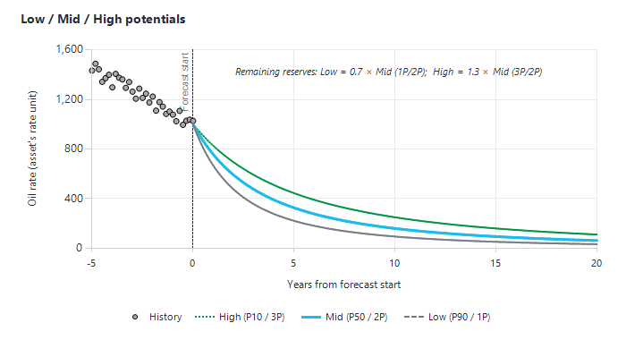
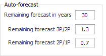
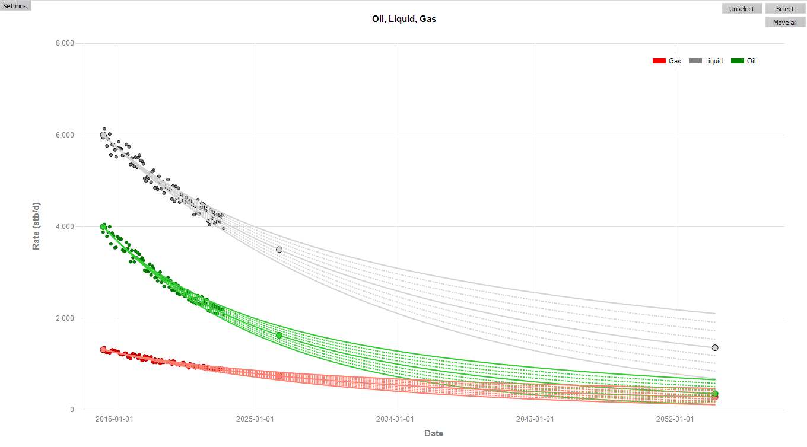
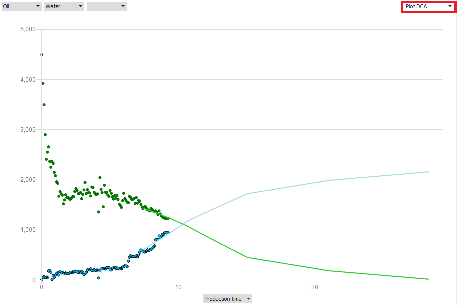

|
Decline Curves (DCA): production and injection potentials
1. Overview
The Decline Curves window is where you define each well's potential: the rate the well could deliver at every date of the forecast if nothing held it back. For producers the potential is a rate plus its ratios (BSW and GOR, or WGR and CGR); for injectors it is an injection rate.
During a forecast, Precept applies the shutdowns and the network and facility constraints to these potentials. The result is the constrained forecast; the difference between potential and constrained forecast is the shortfall.
Decline curves are used when the scenario's "Decline" setting is "Decline curves". For a pressure-driven forecast, see Material Balance.
2. Opening the window and selecting a well
1.On the main window, select the project and the scenario.
2.Click "Decline Curves" in the "Expertise" group of the main ribbon. The window opens maximised, on the same project and scenario.
3.In the left panel, narrow the well list if needed with the well-type list (All, Oil Producer, Gas Producer, Water Injector, Gas Injector) and the "Reservoir:" list.
4.Click the well in the "Well:" list. Its history and its current potential are drawn.
If you have changed the decline and select another well (or close the window) without saving, Precept asks whether to continue without saving.

The window is organised as follows:
•Main chart (left): the main fluid. Liquid, oil and gas for an oil producer; gas for a gas producer; the injection rate for an injector. Allocated history is drawn as dots, the potential as lines with draggable points.
•Potential table (under the main chart): one row per point of the decline. Edit values here, or with the "-" and "+" buttons above it.
•Two charts on the right: the ratios (BSW and GOR, or WGR and CGR) or any plot you choose (section 8).
•Options panel: the DCA method list, the "Low case" / "Mid case" / "High case" / "All cases" selectors, "View DCA" ("vs Time" or "vs Cumulative"), "Gas-lift", "EUR", "STOOIP" and "Comment:".
3. DCA methods
Choose the method in the DCA method list of the options panel. Six methods are available:
|
Method
|
What it models
|
|
Exponential
|
ARPS decline with b = 0: a constant decline rate.
|
|
Hyperbolic
|
ARPS decline with 0 < b: the decline rate itself falls with time.
|
|
Harmonic
|
ARPS decline with b = 1.
|
|
Hybrid
|
A hyperbolic decline followed by an exponential (terminal) decline from a switch date.
|
|
Multi-segment vs Cum
|
Straight-line segments of the rate and the ratios against cumulative production (section 3.2).
|
|
Multi-segment vs Time
|
Straight-line segments of the rate and the ratios against time (section 3.3).
|
3.1 ARPS declines (Exponential, Hyperbolic, Harmonic, Hybrid)
The ARPS equation gives the rate q at a time t after the start of the decline:
q(t) = qi / (1 + b·Di·t)^(1/b), which becomes q(t) = qi·exp(−Di·t) when b = 0.
•qi is the rate at the start of the decline, read from the first row of the potential table.
•Di is the initial nominal decline, entered as a percentage per year in the "Nominal Decline … (%)" columns.
•b is the curvature, entered in the "b factor …" columns.
For an oil producer, oil, liquid and gas each have their own qi, Di and b. Water and the ratios follow from these three rates. The last row of the table holds the end date of the decline. For "Hybrid", a later row marks the switch to the exponential decline, with its own nominal decline and b = 0.

The ARPS family for the same qi and Di. A higher b gives a flatter late-time decline; Hybrid starts hyperbolic and switches to an exponential tail.
Further reading: SPE PetroWiki, Production forecasting decline curve analysis and whitson manual, Decline curve analysis.
3.2 Multi-segment vs Cum
The potential is a series of points; between two points each quantity varies linearly with cumulative production:
•Oil producer: liquid rate, BSW and GOR against cumulative oil. Oil, water and gas rates are calculated from them. On the right chart you can work on WOR instead of BSW (the BSW / WOR list above that chart).
•Gas producer: gas rate, water-gas ratio (WGR) and condensate-gas ratio (CGR) against cumulative gas.
•Water injector: water injection rate against cumulative water injection.
•Gas injector: gas injection rate against cumulative gas injection.

3.3 Multi-segment vs Time
Same quantities as "Multi-segment vs Cum", but each varies linearly with time between two points. This suits profiles imported from a simulator or from Excel (see Duplicate / import profile).
4. Modifying a decline
4.1 Table and chart
•Type values in the potential table. You can paste one column at a time from Excel.
•Drag the points of the decline on the main chart, and on the ratio charts when they are set to "Work on DCA".
•For the multi-segment methods, add a point with "+" and remove one with "-". A decline must keep at least one segment.
•"View DCA" switches the main chart between "vs Time" and "vs Cumulative".
4.2 Buttons on the main chart
•"Select" / "Unselect": draw a lasso around history points to include or exclude them from the fit (outliers, unrepresentative periods).
•"Move all": while active (the button reads "unMove all"), dragging any point moves the whole decline. All rates are scaled by the same ratio, and all points are shifted by the same time or cumulative. The decline keeps its exact shape, so you can re-apply a decline fitted on an earlier period from a new start. The start stays within the history and snaps to the allocation data when you release the mouse. To move the rates only, lock the X axis first (section 4.3).
•"Apply constant Liquid" and "Apply constant GOR" (multi-segment methods): copy the first row's liquid rate or GOR to every later point.
•"Adjust DCA to last Allocation": re-anchors the decline on the last allocated data before the forecast start (rate, and BSW / GOR for multi-segment declines).
•"Draw on DCA" (in Settings): click on the main chart to sketch a guide line; "End Draw on DCA" stops drawing and "Delete draw on DCA" removes it.
4.3 Mouse shortcuts on the charts
•Lock X axis: right-click the main chart away from the curves to switch "X-Axis locked" on or off. While it is on, dragged points move only vertically.
•Log axis: double-click the Y axis of a chart to switch it between linear and logarithmic. For the main chart this is the same as "semi log" in Settings. Points can be dragged on a log axis too, and the axis no longer jumps when you release a point.
•Zoom: double-click inside a chart to switch "Allow zoom" on or off, then drag to zoom. "Unzoom" restores the view.
•Right-click an axis to set its range, or to open the "Format chart" dialog on the right-hand charts. Right-click a curve to change its style, colour and thickness.
•Right-click or double-click a legend to hide it ("Legend" in Settings shows it again).
5. Low, Mid and High cases
Every well has three potentials:
•"Low case": the P90 / 1P potential.
•"Mid case": the P50 / 2P potential, used by the deterministic forecast.
•"High case": the P10 / 3P potential.
Select a case to edit it; tick "All cases" to draw all three. The "EUR" box shows 1P, 2P and 3P: the cumulative at the end of the Low, Mid and High declines. The "STOOIP" box shows the in-place volumes entered in "Pattern properties".
"Copy Mid case to Low and High cases" (in Settings) replaces the well's Low and High cases with copies of its Mid case.
The probabilistic forecast samples between the three cases. Tick "Probabilistic" in Settings to see the intermediate P20 to P80 profiles that will be used (see Probabilistic forecast).

Low, Mid and High potentials of one well. The auto-forecast sets the Low and High remaining reserves as fixed ratios of the Mid case (0.7 and 1.3 by default).
6. Auto-forecast
6.1 Auto-forecast settings
Click "Settings" (top-left of the main chart). The "Auto-forecast" group holds:
•"Remaining forecast in years": how long the fitted decline runs from today (30 by default).
•"Remaining Reserves 1P/2P" (0.7 by default) and "Remaining Reserves 3P/2P" (1.3 by default): the ratios used to build the Low and High cases from the Mid case.
Click anywhere on the main chart to close the Settings panel.

6.2 Auto-forecast with ARPS (oil, liquid and gas)
1.Select the producer and "Mid case".
2.Select "Exponential", "Hyperbolic" or "Hybrid" as the DCA method.
3.Use "Select" / "Unselect" to keep only the history that represents the well's current behaviour.
4.Check the auto-forecast settings (section 6.1).
5.Click "Auto-forecast". Precept fits oil, liquid and gas separately. Unless you changed them yourself, it first ticks "Filter initial bean-up" and "Filter outliers".
6.Adjust the Mid case by hand if needed.
7.With "Mid case" still selected, click "Auto-forecast Low / High from Mid".
8.Click "Save".

6.3 Auto-forecast with ARPS on liquid and straight lines on BSW and GOR
For an oil producer, select "Multi-segment vs Cum" and follow the same steps. "Auto-forecast" then:
•fits a hyperbolic decline on the liquid rate;
•fits a straight line of BSW (or WOR) against cumulative oil;
•fits a straight line of GOR against cumulative oil.
"Auto-forecast Low / High from Mid" then sets the remaining oil of the Low and High cases to the Mid remaining oil times the 1P/2P and 3P/2P ratios, and adapts the BSW trend to match.
6.4 All wells at once
•"Match DCA to latest Allocated data for all wells" (ribbon) re-anchors every producer's decline on its latest allocated data. It asks for confirmation twice. A well is changed only when its last allocated oil rate is within ±20 % of its decline.
•"Match Gas-lift to last Well Test for all wells" sets each well's gas-lift rate to its last well test.
7. Analogues, type curves and other helpers
7.1 Wells in the background
Under "Plot in background:" you can draw other wells behind the current one as a guide:
1.Pick a project, or an "Analogues - <country>" entry for imported analogue wells.
2.Pick a scenario (or an analogue asset).
3.Pick the wells.
"Normalize production" is ticked automatically for analogues, so that rates are compared per unit of producing interval. Tick "Display Well name for wells in background" in Settings to label them. See Analogues to import analogue wells.
7.2 Type curves, scaling, pads
•"Save as Type Curve": saves the current decline as a reusable type curve. Enter a "Type Curve name :" and a "Producing interval :". A type curve must start at zero cumulative oil and gas. "Delete Type Curve" removes one.
•"Scale profiles": multiplies the profile by a "Reserves scaling factor" and a "Rates scaling factor", then click "Scale".
•"Pad drilling": builds the Mid profile of a pad from one well's decline. Enter the "Number of wells to be drilled in the pad:" and the "Drilling duration per well (days):". Precept adds one copy of the decline per well, each starting one drilling duration after the previous one. Click "Generate Pad production profiles"; the pad's Mid profile is replaced.
•"Build DCA" (producers): saves the current decline, then rebuilds it as a "Multi-segment vs Cum" profile. The profile is built from the oil (or gas) decline and a pasted table of BSW and GOR (or CGR and WGR) against normalised cumulative N/Np. The N/Np column must start at 0 and end at 1.
8. Plot DCA and DCA diagnostics
8.1 Work on DCA / Plot DCA
Each right-hand chart has a list with two modes:
•"Work on DCA" (multi-segment methods): the chart shows the ratio segments (BSW / GOR, or WGR / CGR) and their points can be dragged.
•"Plot DCA": a free plot for viewing only. Choose up to three Y quantities and an X axis. Y: rates, BSW, 1-FBSW, WOR, GOR, CGR, WGR, injection, cumulatives, effective decline, loss ratio, THP, BHP. X: "Date", "Production time (years)", a cumulative or "Cum Oil N/Np". Points cannot be dragged on a "Plot DCA" chart.
Tick "Lock charts layout" in Settings to stop Precept from changing these charts when you change well or method.

8.2 DCA diagnostics
In "Plot DCA" mode, the first Y list ends with five diagnostic plots, below a separator line under "BHP". Each one shows:
•the history as points: allocated data, honouring the points you selected;
•the ticked cases as lines: Low dashed, Mid solid, High dotted;
•a short reading note under the chart.
The rate used is gas for a gas producer and oil otherwise.
|
Diagnostic
|
Plot and how to read it
|
|
Flow regime
|
Rate against production time (days) on log-log axes, with reference lines of slope −1/2 (linear flow) and −1/4 (bilinear flow).
Points leaving the −1/2 line downward mark the end of linear flow. From there a normal ARPS or terminal decline applies.
Drag the middle of a reference line to move it, or an end to rotate it (the label shows the slope). Double-click a line to restore its exact slope.
|
|
Chan plot
|
WOR (WGR for a gas producer) and its time derivative WOR' against production time, log-log.
WOR' rising with a positive slope suggests channelling. WOR' falling or flattening while WOR rises suggests coning. A flat or falling WOR suggests normal displacement.
|
|
Linear flow (1/q vs √t)
|
1/rate against the square root of production time. In fracture linear flow the points lie on a straight line through the origin. Where they bend upward, linear flow has ended; use an ARPS decline with a lower b from that time.
|
|
b-factor
|
The ARPS b measured from the rates (the time derivative of the loss ratio), against production time (log), with reference lines at b = 0, 1 and 2.
The history points and the forecast line should sit at the same b. A b above 2 early means transient flow. A b falling towards 0 late means boundary-dominated flow, so the forecast should end on an exponential decline.
|
|
Ershaghi X-plot
|
X = ln(1/fw − 1) − 1/fw against cumulative oil (fw = water cut), with reference lines at 90, 95, 98 and 99 % water cut. Above about 50 % water cut the points fall on a straight line. Where that line crosses your economic water cut gives the recoverable oil; the forecast should follow the same trend.
|
9. Ratios, gas producers and injectors
•Oil producer: the right-hand charts show BSW (or WOR) and GOR. With an ARPS method they follow from the oil, liquid and gas declines. With a multi-segment method you shape them directly ("Work on DCA").
•Gas producer: the main chart is the gas rate and the right-hand charts show WGR and CGR, in the asset's units.
•Water or gas injector: the main chart is the injection rate. Only one right-hand chart is shown, in "Plot DCA" mode. "Build DCA" is not available for injectors.
•Gas-lift (producers): in the "Gas-lift" box choose "Constant Gas-lift" (a fixed gas-lift rate) or "Constant TGLR" (a fixed total gas-liquid ratio), and enter the value.
10. Settings panel
"Settings" opens a panel with the display and data options. Click the main chart to close it.
•"Show / Hide parameters": "Oil", "Liquid", "Gas", "Allocated production", "Forecast", "back-Forecast", "Decline rate (%)", "THP", "BHP", "Timeline", "Legend" and "Probabilistic". "Timeline" marks the well's open and closed periods on the main chart.
•"Chart options": "semi log", "Allow Zoom", "Max date:" and "Auto adjust start".
•"Allocated Production": draw style (Dot, Line, StepLine, Line + Dot, StepLine + Dot), monthly or daily data, "Filter outliers", "Filter initial bean-up", and "Plot every … days".
•"Well Tests" (overlay the well tests), "WOR", "Normalize production" (rates per unit of producing interval), "Lock charts layout" and "Display Well name for wells in background".
•"Auto-forecast" (section 6.1), "Copy Mid case to Low and High cases" and "Draw on DCA".
11. Ribbon of the Decline Curves window
Some buttons appear only when the related data exist on your installation.
|
Button
|
What it does
|
|
Updates log
|
Lists, per well, who last saved the decline, when, and the comment.
|
|
Higlight over/under performing
|
For producers: a table comparing each well's last allocated oil, water, gas and liquid with its decline (delta and delta %). Select "Oil Producer" or "Gas Producer" in the well-type list first.
|
|
Export all well parameters
|
Table of the decline parameters of all producers for the selected case.
|
|
Match DCA to latest Allocated data for all wells / Match Gas-lift to last Well Test for all wells
|
See section 6.4.
|
|
Decline raw data / Allocated data / Well Tests
|
Tables of the computed decline, the allocated history and the well tests of the well.
|
|
Import / Duplicate profile
|
See Duplicate / import profile.
|
|
View DCA on maps
|
Opens the "Decline Patterns" map view of the scenario's wells and patterns.
|
|
Import Historical Allocated Data, Transient, PVT, Pattern properties
|
Data imports and well/pattern data (the "Import Data" group). STOOIP / OGIP for the "STOOIP" box are entered in "Pattern properties".
|
|
Import Analogues Data, Convert to Precept model, Delete analogue wells
|
The "Analogues" group (see Analogues).
|
12. Saving
•Click "Save" (above the potential table). The well's Low, Mid and High cases and the comment are written to the scenario, and Precept confirms with "Decline curves have been saved successfully !".
•Changes are kept as you work, but they reach the forecast only after "Save".
•If the setting "Apply same potentials to all wells from same reservoir (explo)" is ticked, saving also copies the profile to every other well of the same type in the same reservoir.
13. Checking well status before a forecast
A potential only produces when the well is open. On the main window, tick "Hightlight current Well Status":
•Every well name in the schedule is coloured with its last actual status: green for oil, navy for water injection, dark red for gas, dark grey for closed.
•If the scenario has a forecast run, the pop-up "Well status: last actual vs first forecast day" lists only the wells whose Open / Close status differs between the last actual data and the first forecast day. Columns: "Well", "Last actual", "First forecast day", "Scheduled on day 1". Exploration and appraisal wells are left out.
•Double-click a row to scroll the schedule to that well. "Export to Excel" saves the list.
|